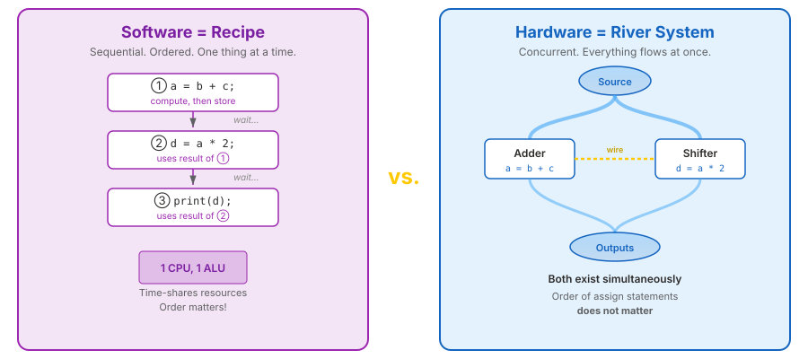

Dr. Mike Borowczak · Electrical & Computer Engineering · CECS · UCF
HDL ≠ SoftwareSynth vs SimModule AnatomyLogic Refresher
The Central Misconception
If you know C, Python, or Java, your instinct will be to read Verilog
top-to-bottom and imagine it executing line by line.
This instinct is wrong.
Unlearning it is the single most important thing you'll do this week.
Software vs. Hardware
Software (C)
a = b + c;
d = a * 2;
Line 1 executes, completes, then line 2 executes.
Hardware (Verilog)
assign a = b + c;
assign d = a * 2;
Both describe hardware that exists simultaneously.
There is an adder. There is a shifter. They are both always active.
When b changes, a and d both update — through physical gates.
Three Fundamental Differences
Concept
Software
Hardware (Verilog)
Execution
Sequential — one at a time
Concurrent — all at once
Assignment
"Compute and store"
"Create a permanent connection"
Time
Implicit — program counter
Explicit — propagation delay, clock edges
The River Analogy

Software (recipe) b=3, c=4
Course of execution
a
d
before line 1
—
—
after a = b + c
7
—
after d = a * 2
7
14
Hardware (river) inputs change over time
Course of execution
a
d
always (b=3, c=4)
7
14
always (b=5, c=4)
9
18
always (b=5, c=1)
6
12
You are not writing instructions.
You are describing the geography of the river.
More Code = More Hardware
Software
x = a + b;
y = c + d;
May reuse the same CPU adder at different times.
Verilog
assign x = a + b;
assign y = c + d;
Each implies its own physical adder.
Two adders exist on the chip.
Resource awareness: More lines of Verilog = more gates = more FPGA resources consumed.
You cannot malloc a flip-flop. Everything is fixed at synthesis time.
Parallelism Is Free
assign sum = a + b; // adder
assign product = c * d; // multiplier
assign result = sum | product; // OR gate
All three operations happen at the same time.
No threads. No cores. No synchronization primitives.
In hardware, parallelism is the default. Sequentiality is what takes effort.
Software: sequential by default, parallel takes work.
Hardware: parallel by default, sequential takes work.
🤖 Check the Machine
Ask an AI assistant:
“Here's a Verilog snippet with three assign statements
on three lines. In what order do they execute?”
TASK
Paste three assign statements. Ask execution order.
BEFORE
Your prediction (now!): “Top to bottom, one at a time” — common wrong answer.
AFTER
Good AI models correctly say: all three are concurrent, no order. Weak models say “top to bottom.”
TAKEAWAY
If AI says “top to bottom,” it has the same bug you had. Use as a model-quality test.
Meta-lesson: This question is a litmus test. If an AI assistant
tells you assign statements execute in file order, it's
reasoning about Verilog as if it were C. Don't trust that AI for HDL work
until you catch it making this mistake and correcting it.
Key Takeaways
①
Verilog describes concurrent hardware, not sequential instructions.
②assign creates a permanent connection — a wire, not a variable.
③
More Verilog = more hardware. Resources are fixed at synthesis time.
④
Parallelism is free. Sequentiality takes effort.
You are describing the geography of the river — not writing a recipe.
Up Next
Synthesis vs. Simulation
Day 1, Video 2 of 4 · ~10 minutes
The same Verilog file, two very different tools, two very different purposes.